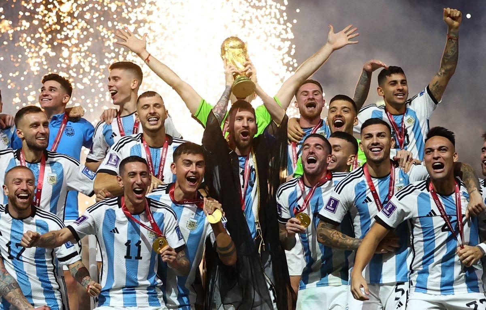

Argentina, campeón del mundo: de la mano de Messi y Dibu, le ganó a Francia y consiguió su tercera estrella ⭐⭐⭐
______________________________________________________________________________________________________________
La selección argentina de fútbol se proclamó por tercera vez en su historia campeona del mundo este domingo (18.12.2022) en Qatar 2022, a escasos kilómetros al norte de Doha. Minutos después de ganar su primera Copa del Mundo, un Lionel Messi en éxtasis tomó el micrófono del Estadio de Lusail: "¡La c*** de tu madre, somos campeones del mundo!"..
El astro saludó con esa frase tan argentina, no exenta de connotaciones negativas, a los miles de hinchas de la Albiceleste que ondeaban camisetas y celebraban el título del equipo de Lionel Scaloni. Messi, con siete goles y tres asistencias a lo largo del torneo, fue elegido como el mejor jugador de la final y también del Mundial 2022, secundado en los premios individuales por sus compatriotas Enzo Fernández, el mejor joven, y Emiliano Martínez, mejor portero..
El francés Kylian Mbappé fue reconcido como el mejor goleador, con ocho dianas. No solo se llevó la Bota de Oro, sino el récord de máximo goleador en una final. Además, desde 2002, con Ronaldo Nazario con Brasil, nadie alcanzaba ocho goles en la fase final de la competición. Sin embargo, estaba abatido tras el final del partido, en el que metió tres goles, además de otro más en la tanda de penales. El propio presidente francés, Emmanuel Macron, bajó al terreno de juego para consolar a la selección y, en especial, a un Mbappé sentado sobre el césped y con la cabeza baja.